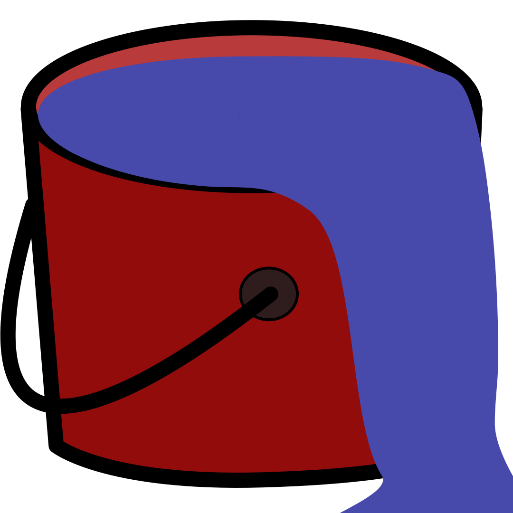

<!--
============================================
 Title: not-found.component.html
 Author: Andres Macias
 Date:   01/29/23
 Description: contains code for the log in page
===========================================
-->

<div fxLayout="row" class="main-welcome">
  
  <mat-card>
    <mat-card-title class="">
      <h1 class="title">404 Page not found!</h1>
    </mat-card-title>
      <mat-card-content>
        <h2>Derp! Looks like you can't find your bucket!</h2>
       <button mat-raised-button color="primary" routerLink="">Return Home</button>
      </mat-card-content>
  </mat-card>
  

</div>
